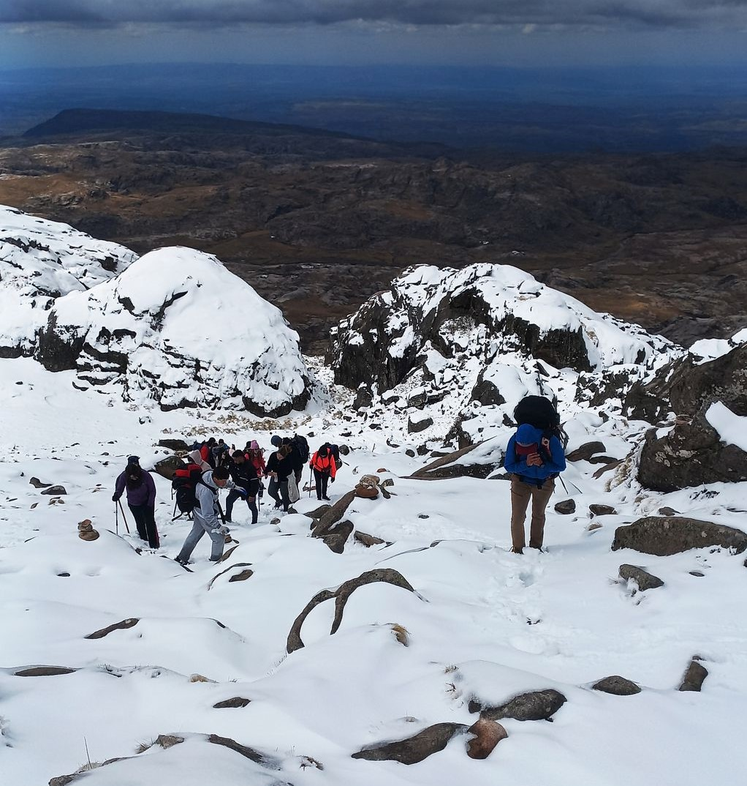
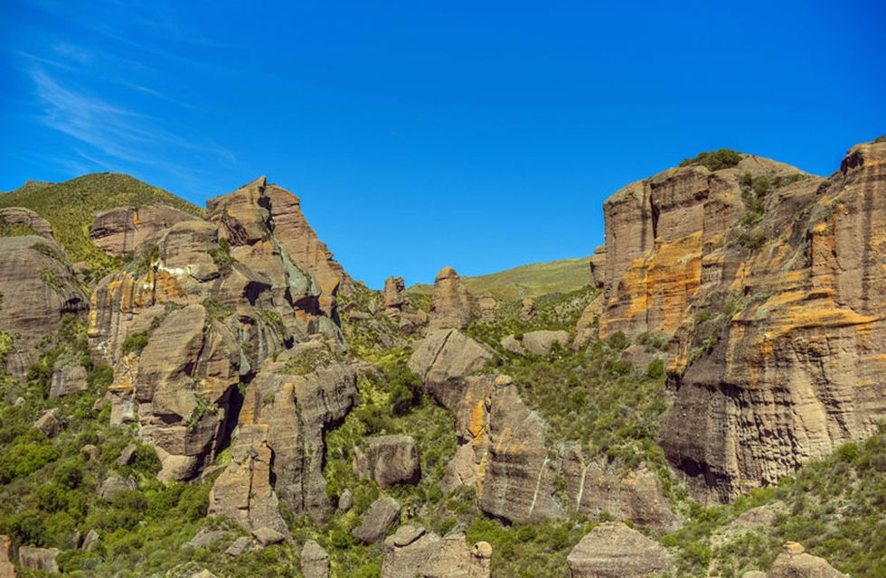
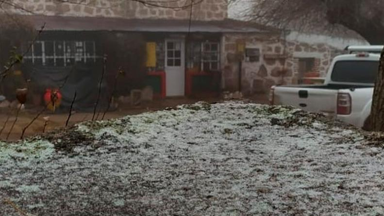

<main [ngClass]="'seccion-novedades'">
    <div [ngClass]="'container'">
        <h1 [ngClass]="['text-center' ,'titprincipal']"> Novedades! </h1>
        <h4 [ngClass]="'text-center'">Últimas Meses</h4>
        <div [ngClass]="['row' , 'borde-noticia'  ,'mb-3']" *ngFor="let blog of blogs">
            <div [ngClass]="['col-xl-4', 'col-md-12', 'col-sm-12', 'pl-0' ,'mb-3']" >
                <p [ngClass]="'ms-3'"></p>
                
            </div>
            <div [ngClass]="['col-xl-8', 'col-md-12' ,'col-sm-12', 'pt-4']">
                <h2 [ngClass]="'h4'">
                    {{blog.titulo}}
                </h2>
                <p>
                    {{blog.articulo}}
                </p>
            </div>
        </div>


        <!-- <h4 [ngClass]="'text-center'">
            Últimos meses
        </h4>


        <div [ngClass]="['row',  'borde-noticia', 'mt-4']" *ngFor="let blogMeses of blogsUltimosMeses">
            <div [ngClass]="['col-xl-4', 'col-md-12','col-sm-12' , 'pl-0', 'mb-3']">
                <p [ngClass]="'ms-3'">
                    {{blogMeses.fecha}}
                </p>
                
            </div>
            <div [ngClass]="['col-xl-8', 'col-md-12','col-sm-12', 'pt-5']">
                <h2 [ngClass]="'h4'">
                    {{blogMeses.titulo}}
                </h2>
                <p> 
                    {{blogMeses.noticia}}
                </p>
            </div>
        </div>         -->
    </div>
</main>


<!-- <div class="seccion-novedades">
  <div class="container">
      <h1 class="text-center titprincipal"> Novedades! </h1>
      <h4 class="text-center">Últimas semanas</h4>
      <div class="row  borde-noticia  mb-3">
          <div class="col-xl-4 col-md-12 col-sm-12 pl-0 mb-3">
              <p class="ms-3"></p>
              
          </div>
          <div class="col-xl-8 col-md-12 col-sm-12 pt-4">
              <h2 class="h4"> El Cerro Champaquí, con nieve y como nunca lo viste</h2>
              <p> Ocurrió en la última nevada en Córdoba cuando un grupo escalaba la montaña
                  con guías de turismo y fueron testigos privilegiados de una situación que pocas veces se ve.
                  Cuando casi estaba terminando el mes de septiembre, los cordobeses se vieron sorprendidos por una
                  ola de frío vinculada con nevadas registradas en las Sierras Grandes.<br>
                  Uno de los sectores donde más nieve cayó fue en la zona del Champaquí. En ese cerro, el más alto de
                  Córdoba, se encontraba el experimentado guía de montaña Damián Gauna, liderando un grupo de
                  excursionistas de docentes y alumnos de la escuela N° 3007 de Figuera, Provincia de Santa Fe.<br>
                  “Soy guía de montaña y hace unos días tuvimos una experiencia bastante particular digna de mostrar
                  al público. Junto con una escuela subimos al Champaquí en medio de la última nevada de septiembre.
                  Había 30 centímetros de nieve en gran parte del Cerro”, contó el profesional al diario La Voz.
              </p>
          </div>
      </div>
      <h4 class="text-center"> Últimos meses</h4>

      <div class="row  borde-noticia mt-4">
          <div class="col-xl-4 col-md-12 col-sm-12  pl-0 mb-3">
              <p class="ms-3">25 de septiembre</p>
              
          </div>
          <div class="col-xl-8 col-md-12 col-sm-12 pt-5">
              <h2 class="h4"> El paisaje milenario que podés descubrir en Córdoba</h2>
              <p> Los Terrones: una zona de formaciones rocosas y arenisca formada en la
                  prehistoria, que se puede conocer a pocos kilómetros de Capilla del Monte.<br>
                  Si la Tierra pudiese hablar nos contaría historias increíbles de sus eras pasadas y los habitantes
                  que pisaron su suelo fértil. Aunque no tenga voz humana, deja el reflejo de sus milenios plasmados
                  en las formaciones que adornan su superficie. Los Terrones, en las cercanías de Capilla del Monte es
                  uno de esos lugares. ¿Lo conocés?<br>
                  El Parque Autóctono Cultural y Recreativo Los Terrones, queda a las afueras de la localidad
                  capillense, en el Valle de Punilla, y a unos 115 kilómetros de la ciudad de Córdoba. El predio del
                  parque guarda cañadones profundos y paredones de piedra rojiza, atravesados por arroyos.<br>
                  Abre todos los días, desde las 9:00 hasta las 18.30 horas, en horario de invierno.
              </p>
          </div>
      </div>

      <div class="row  borde-noticia mt-4">
          <div class="col-xl-4 col-md-12 col-sm-12  pl-0 mb-3">
              <p class="ms-3">18 de agosto</p>
              
          </div>
          <div class="col-xl-8 col-md-12 col-sm-12 pt-5">
              <h2 class="h4"> Los primeros copos de nieve del invierno cayeron en Los Gigantes</h2>
              <p> Se precipitaron en la zona de las sierras grandes. La temperatura en el lugar
                  es de 3 grados.<br>
                  En la mañana de este sábado nevó en Los Gigantes, una zona de las sierras grandes de Córdoba. Hasta
                  el momento este es el único punto de la provincia en el que ocurrió el fenómeno más esperado del
                  invierno.
                  En diálogo con Carlos Paz Vivo! una vecina contó que amaneció “todo congelado” y que alrededor de
                  las 11 comenzaron a caer pequeños copos de nieve. También alertó que el acceso a la montaña para
                  realizar deporte está cerrado.<br>
                  La temperatura en el lugar es de 3 grados. “No está tan frío”, aseguró otro hombre al mismo medio.
                  Cabe destacar que desde la madrugada de este sábado el camino de las Altas Cumbres permanece cortado
                  por el hielo que hay en la calzada. La Policía Caminera podría habilitarla nuevamente durante la
                  jornada.
              </p>
          </div>
      </div>
  </div>
</div> -->
